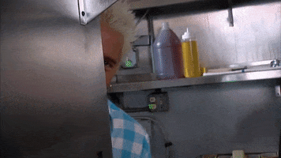

Guy Fieri is an American restaurateur, author, and an Emmy Award winning television presenter. He co-owns three restaurants in California, licenses his name to restaurants in New York City and Las Vegas, Nevada, and is known for hosting various television series on the Food Network. By 2010, The New York Times reported that Fieri had become the "face of the network", bringing an "element of rowdy, mass-market culture to American food television" and that his "prime-time shows attract more male viewers than any others on the network”. Fieri was born Guy Ramsay Ferry on January 22, 1968, in Columbus, Ohio, the son of Penelope Anne (née Price) and Lewis James Ferry. He grew up in Ferndale in rural Humboldt County, California. During high school, he was a foreign exchange student in France, where he developed his interest in food and cooking. Fieri attended the University of Nevada, Las Vegas, and graduated with a Bachelor of Science in Hotel Management in 1990.
